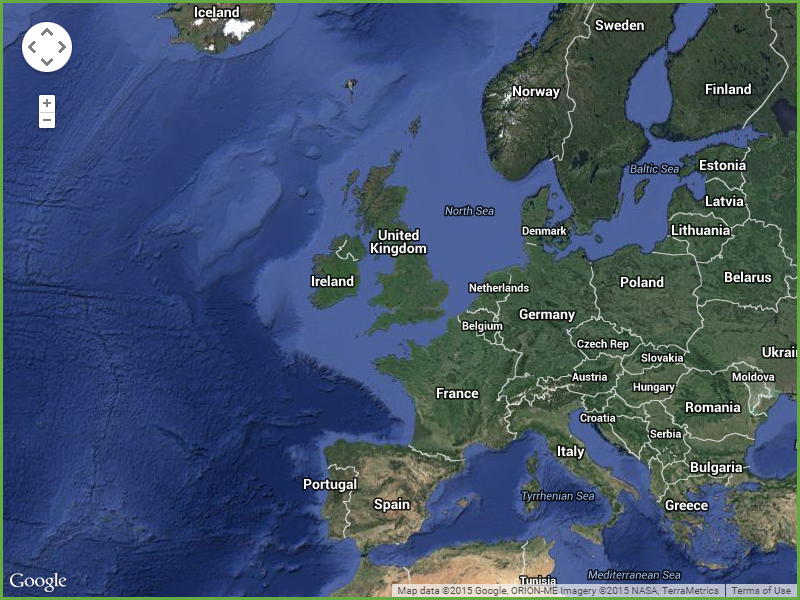
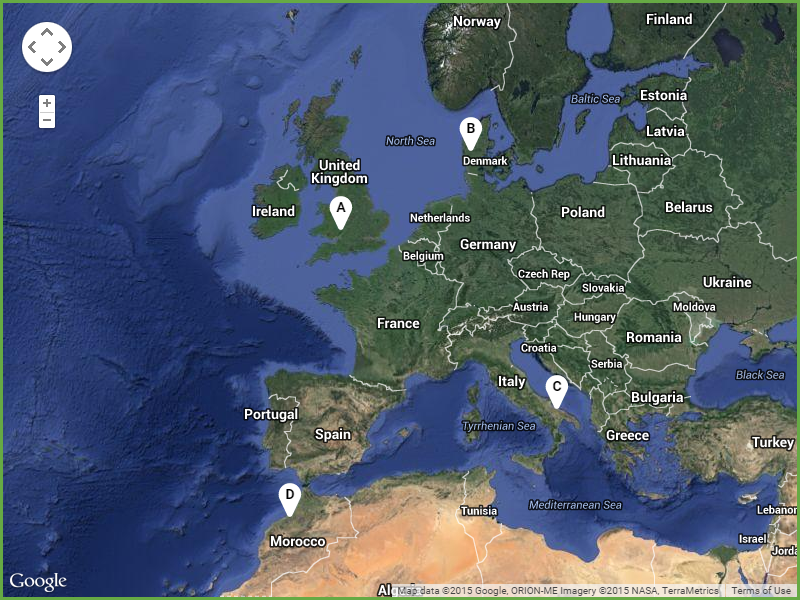
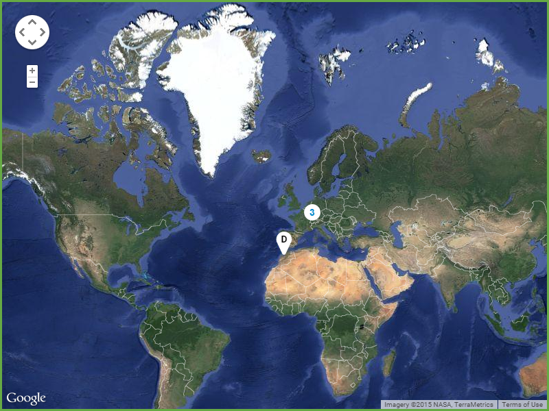
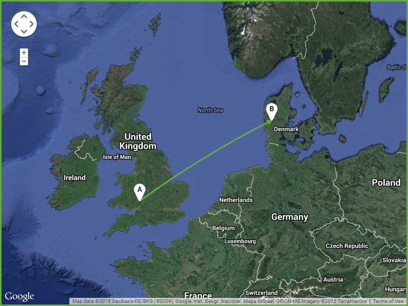
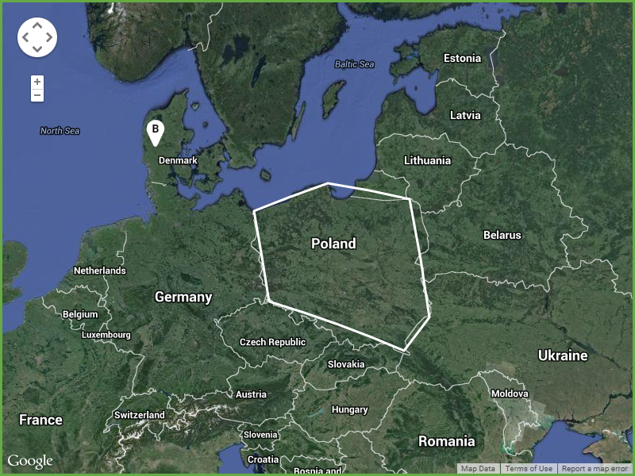

This page outlines styles for using Google Maps API within the Greenlight Products.
Where possible use the HYBRID map type, which is satellite imagery with text labels, boundaries, major roads and places indicated.
The pan, rotate and zoom controls are shown, others are hidden by default. The zoom control should be the small/mobile version.
Map markers, also known as pins, use the Font Awesome map marker icons. There are 2 versions, one with a hole and one solid. The version with the hole is the default version, the solid version is used when a character is placed on the marker.
By default map markers are white (#fff) with black (#000) text but colours can change to other colours from the palette as needed. Text is 14px and bold.
The label which shows a single character on a marker should always be a letter A-Z (and then a-z if more are needed) so as not to be confused with marker clusters.
Where several map markers are close together they should be replaced with a marker cluster - a circle which indicates the number of markers it replaces.
By default this is white (#fff) with blue text (#08c). As with the markers, text is 14px and bold.
Lines, called polylines in Google Maps, should always have a strokeWidth of 3 (3px thickness).
Colour will depend on usage, e.g. the status of a chain, and can use the RAG colours, but is set as white (#fff) by default.
If an arrow is required, the FORWARD_OPEN_ARROW Google Maps symbol should be used with the same colour as the line.
The "geodesic" property, which uses the Earth's curvature in calculations rather than treating it as a flat 2D map, should be set to true. This usually results in slightly curved lines.
Polygons, shapes made up of polylines, can use different colours but the default stroke colour is white (#fff). They should always have a strokeWidth of 3.
By default there is no fill so that the detail inside can be seen clearly.
The "geodesic" property should be set to true.
There is a script which sets all the default properties that should be used and even includes some SVG symbol paths and Data URIs for icons.
See the Pen Google Maps API Default Settings by Greenlight Style Guide (@greenlightstyleguide) on CodePen.